Elke ochtend hadden we met ons team een stand-up meeting. Tijdens deze stand-up bespraken we onze voortgang, waarbij elk teamlid vertelde wat hij of zij de vorige dag had gedaan. Dit hielp ons om de voortgang van het project goed in de gaten te houden. Daarnaast spraken we af wat iedereen die dag zou gaan doen en wie welke taken op zich zou nemen. Voor het beheer van onze taken gebruikten we een Trello-bord. Op dit bord noteerden we wat er al was afgerond, waar we nog aan werkten, en welke taken nog gedaan moesten worden. We gebruikten Trello ook om onze meetings te plannen en deze afspraken stonden tevens in onze agenda. In Trello hielden we ook de backlog bij en verzamelden we alle informatie over het project. Dit zorgde voor een overzichtelijke en gestructureerde werkwijze, waarbij iedereen steeds goed op de hoogte was van de status van het project en zijn of haar verantwoordelijkheden.
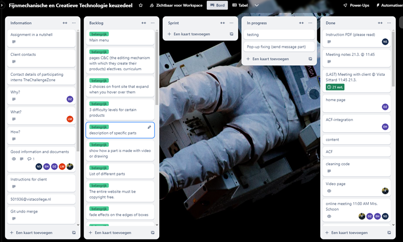Samen met drie andere teamleden heb ik een website gebouwd met WordPress. Het doel was om de klant de mogelijkheid te geven eenvoudig aanpassingen te doen, zoals het veranderen van video's en teksten op de website. De website bevat ook een pop-up functie. Wanneer je op de knop klikt, opent er een formulierpagina waar bezoekers hun vragen of opmerkingen kunnen achterlaten. Deze berichten worden vervolgens naar het e-mailadres van de klant gestuurd. Daarnaast hebben we een slider pagina gemaakt met verschillende voorbeelden waarin YouTube-video's zijn geïntegreerd. Op designgebied hebben we diverse elementen toegevoegd, zoals een zwevende astronaut aan de zijkant van de knoppen. Deze afbeeldingen zijn eenvoudig te vervangen dankzij de geïntegreerde Advanced Custom Fields (ACF) functie. Met ACF kan de klant teksten, afbeeldingen en video's aanpassen zonder in de code te hoeven duiken. Deze opzet zorgt ervoor dat de klant maximale flexibiliteit heeft om de inhoud en het design van de website te beheren zonder technische kennis nodig te hebben.
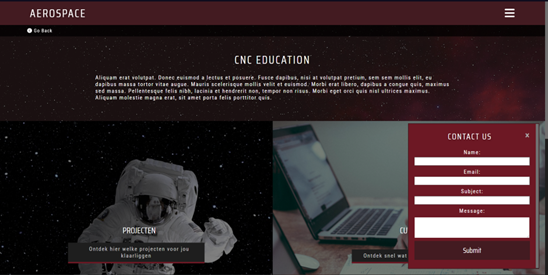 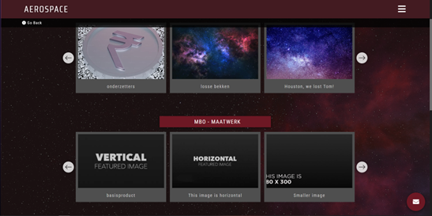 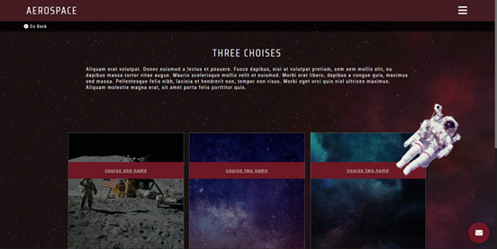De pop-up die open gaat De slider voor de video pagina De 3 keuzes pagina met de vliegende astronaut
Voor de pop-up heb ik een formulier (form) en een knop (button) gemaakt die de pop-up opent. Wanneer de pop-up geopend is, wordt het formulier weergegeven dat bezoekers kunnen invullen. Na het invullen kunnen ze op de submit-knop klikken. Wanneer op de submit-knop wordt geklikt, controleert een PHP-script of alle verplichte velden van het formulier correct zijn ingevuld. Als alles in orde is, wordt de ingevulde informatie per e-mail verzonden naar het adres dat door de gebruiker is opgegeven. Deze aanpak zorgt ervoor dat het proces soepel verloopt en dat de gegevens correct worden verwerkt en afgeleverd, waardoor de klant efficiënt kan reageren op de ontvangen vragen en opmerkingen.
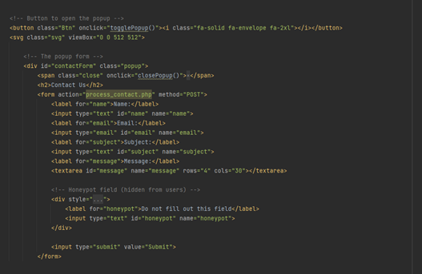dit is de button en de form van de pop-up. in die form wordt gevraagd de naam, email, onderwerp, en het bericht van wat de persoon die de website bezoekt invoert daarna woordt er een honeypot gebruikt dat is voor de veiligheid en voor dat er geen ongewensten berichten erbij gebruikt kunnen worden en daarbij geen bots gebruikt kunnen worden
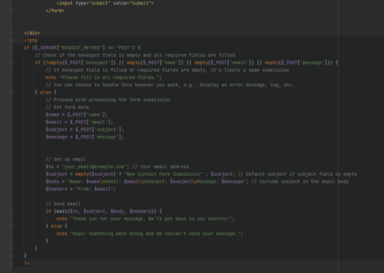Dit PHP-script verwerkt gegevens die via een formulier zijn verzonden. Het valideert verplichte velden zoals name, email en message. Een honeypot-veld, homepage, wordt gebruikt om spam te detecteren door bots uit te sluiten. Als verplichte velden ontbreken of het honeypot-veld is ingevuld, wordt een foutmelding weergegeven. Bij geldige invoer worden de formuliergegevens opgeslagen en een e-mailbericht samengesteld. Het bericht bevat de naam, het e-mailadres, het onderwerp en het bericht van de gebruiker. Een standaardonderwerp wordt gebruikt als het veld subject leeg is. De mail()-functie stuurt de e-mail naar een opgegeven e-mailadres. Bij succes toont het script een bedankbericht; bij fouten verschijnt een foutmelding. Dit script biedt een basisoplossing voor contactformulieren, inclusief eenvoudige anti-spambescherming.
Nadat de software voltooid was, hebben we uitgebreid getest om te controleren of alles correct functioneerde en of het design goed tot zijn recht kwam. Tijdens deze testfase stuitten we op enkele problemen die we vervolgens hebben opgelost. Hierdoor zorgden we ervoor dat dewebsite er goed uitziet en foutloos werkt
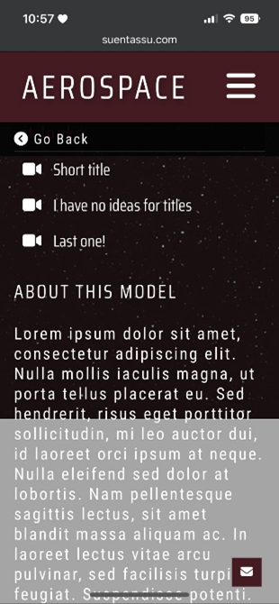 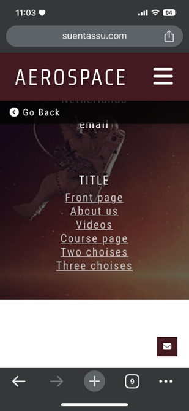 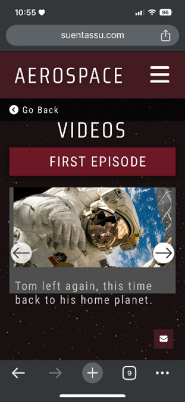Tijdens het testen van de website kwamen we verschillende fouten tegen die we hebben gecorrigeerd. Enkele voorbeelden van deze fouten zijn: 1. Een witte balk aan de onderkant van de website, die daar niet hoorde. 2. Een grijze balk in het midden van de website, die onbedoeld was verschenen. 3. De styling van de pop-up knop werkte niet goed, waardoor de pop-up vierkant was in plaats van rond. 4. Op de videopagina liep de tekst uit de container wanneer er te veel tekst werd toegevoegd. 5. Een afbeelding die bedoeld was om vast te staan, bewoog rond, wat het scrollen op de website bemoeilijkte. We hebben deze problemen aangepakt en opgelost om ervoor te zorgen dat de website er goed uitziet en soepel functioneert.
Na het testen van de software kwamen we enkele problemen tegen op de website, zoals: - Tekst die niet goed weergegeven werd in de slider - Een witte balk onderaan de website - Een grijze balk aan de onderkant - Problemen met de pop-up knop Ik heb de pop-up knop aangepakt door deze rond te maken en groter te maken. Vervolgens heb ik de slider verbeterd door de sliderknop vast te zetten, zodat deze niet meer bewoog. Daarna hebben we gezamenlijk bepaald wie verantwoordelijk zou zijn voor het oplossen van de overige problemen. Iedereen heeft zijn taken uitgevoerd en alle fouten zijn gecorrigeerd. Hierdoor functioneert de website nu naar behoren en ziet deze er goed uit
Sinds ik bij mijn projectgroep ben gekomen, hebben we elke dag een stand-up meeting gehouden. Tijdens deze stand-ups bespraken we wat we die dag gingen doen en of er problemen waren waarbij we elkaar konden helpen. Op 13 maart 2024 hebben we een extra overleg gehad met een van onze teamleden, omdat hij zich niet goed voelde en vaak te laat kwam of niet opdook. In dat gesprek hebben we besproken hoe we hem konden ondersteunen en zijn motivatie konden verbeteren. Op 21 maart 2024 hadden we een meeting met de klant waarin we onze voortgang presenteerden. We lieten zien wat we aan de website hadden gedaan. De klant was erg tevreden met de vooruitgang en we hebben toen besproken welke wijzigingen nog nodig waren.
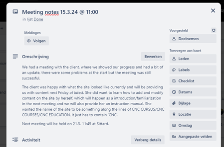Op 21 maart 2024 hebben we onze presentatie gehouden en het project officieel opgeleverd aan de klant. We bezochten de klant op locatie bij Vista Sittard en demonstreerden het eindproduct. Daarnaast hebben we de klant een korte training gegeven over hoe de website te gebruiken, zodat ze zelf eenvoudig aanpassingen kan maken. De klant was uiterst tevreden en zeer blij met het eindresultaat. gemaakt in een korte tijd
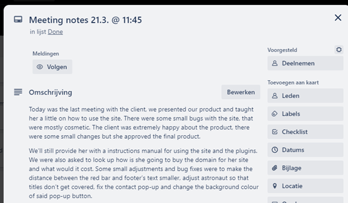Tijdens dit project hebben we als team uitstekend samengewerkt om het beoogde eindproduct te realiseren. Vanaf het begin was er een duidelijke taakverdeling en een gezamenlijke focus op het einddoel. Dit zorgde voor een goede basis in onze samenwerking. Wanneer er problemen optraden, hielpen we elkaar effectief en was iedereen bereid om mee te denken over oplossingen. Deze wederzijdse ondersteuning droeg bij aan een positieve werksfeer en een soepel verloop van het project. Toch waren er enkele uitdagingen, met name op het gebied van communicatie. Twee van onze teamleden kwamen uit Finland, wat af en toe tot misverstanden leidde door culturele verschillen en taalbarrières. Hoewel dit soms wat vertraging veroorzaakte, hebben we hier snel op ingespeeld door onze communicatie aan te passen. Bijvoorbeeld door belangrijke punten in e-mails en vergaderingen explicieter te maken en door tools te gebruiken waarmee iedereen zijn input kon geven. Dit hielp ons om uiteindelijk goed samen te blijven werken, ondanks de aanvankelijke uitdagingen. De presentatie aan de klant was een belangrijk moment in het project, en ik ben blij dat dit goed is verlopen. Tijdens de presentatie hebben we op een gestructureerde en duidelijke manier laten zien wat we hadden bereikt, inclusief de stappen die we hebben genomen om tot het eindresultaat te komen. De klant was tevreden met de opgeleverde website, die niet alleen functioneel, maar ook visueel aantrekkelijk is. Dit was een bevestiging van onze inspanningen en de tijd die we in het project hebben gestoken. Het gaf ons als team een gevoel van voldoening en trots op wat we samen hebben bereikt. Wat betreft mijn persoonlijke bijdrage aan het project, heb ik mij voornamelijk gericht op het ontwikkelen van de pop-up. Dit omvatte het plaatsen van het formulier en het verzorgen van de styling, waarbij ik ervoor zorgde dat het design aansloot bij de rest van de website. Dit proces verliep soepel en zonder noemenswaardige problemen. Daarnaast werkte ik aan het opzetten van de e-mailfunctionaliteit die gekoppeld was aan het formulier. Dit bleek een grotere uitdaging dan ik aanvankelijk had verwacht. Het vereiste veel testen en het zoeken naar een oplossing die zowel technisch betrouwbaar als gebruiksvriendelijk was. Uiteindelijk is het gelukt om een werkende oplossing te implementeren, wat een waardevolle leerervaring voor mij was. Hoewel ik iets later bij het project ben gekomen, heb ik vanaf mijn startmoment mijn uiterste best gedaan om een waardevolle bijdrage te leveren. Ik ben erin geslaagd om snel bij te dragen aan de voortgang en het behalen van de projectdoelen. Het werken aan dit project heeft me niet alleen nieuwe technische vaardigheden opgeleverd, maar ook meer inzicht gegeven in hoe belangrijk teamwork, communicatie en flexibiliteit zijn binnen een project. Over het algemeen kijk ik met trots terug op zowel mijn eigen bijdrage als op de samenwerking binnen het team.
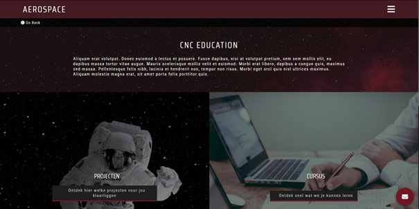